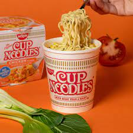

Instant Ramen

Quick and simple Ramen-recipe to ease your appetite in only 3 minutes!
Ingredients
- just a cup of instant noodles will be needed here
How to make your instant noodles
- Heat up your water with a water heater or in any pot on ur stove
- Once the water is at boiling point u can open your noodle cup
- Make sure to open all the spices and put them inside the cup
- Finally, pour in the water up to the designated mark inside the cup, enjoy!